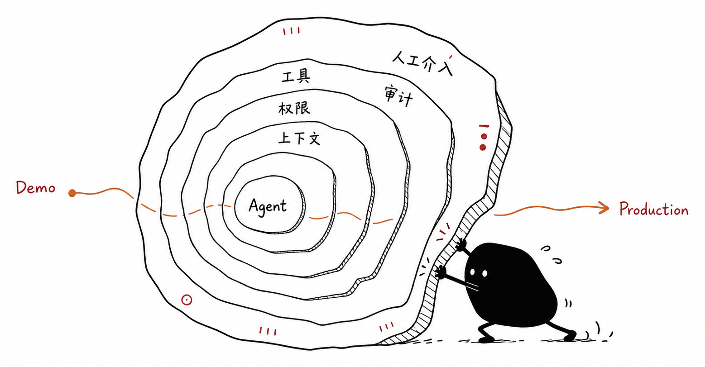
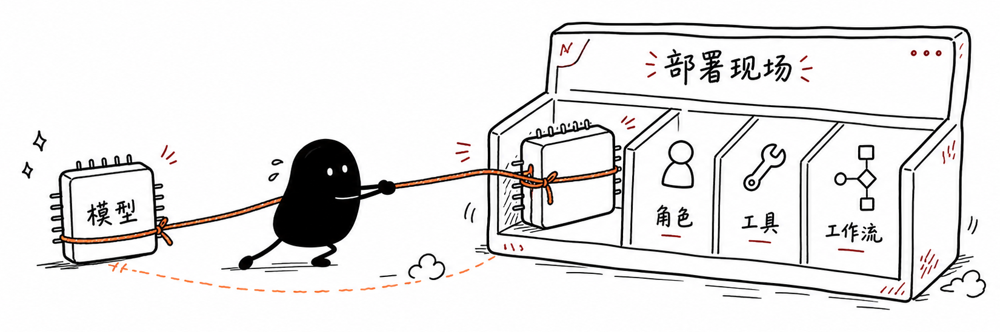
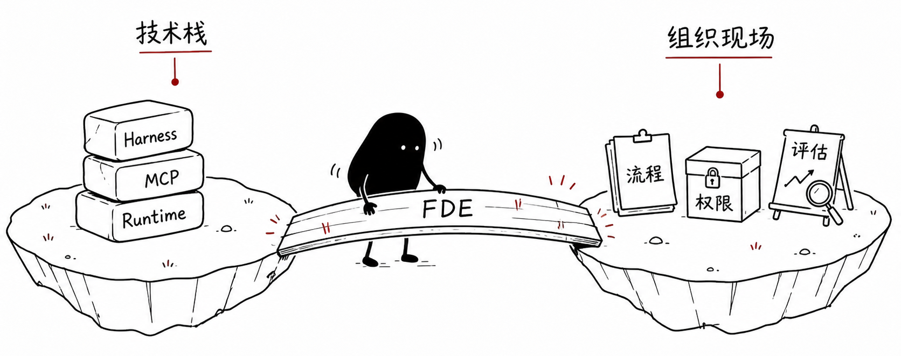
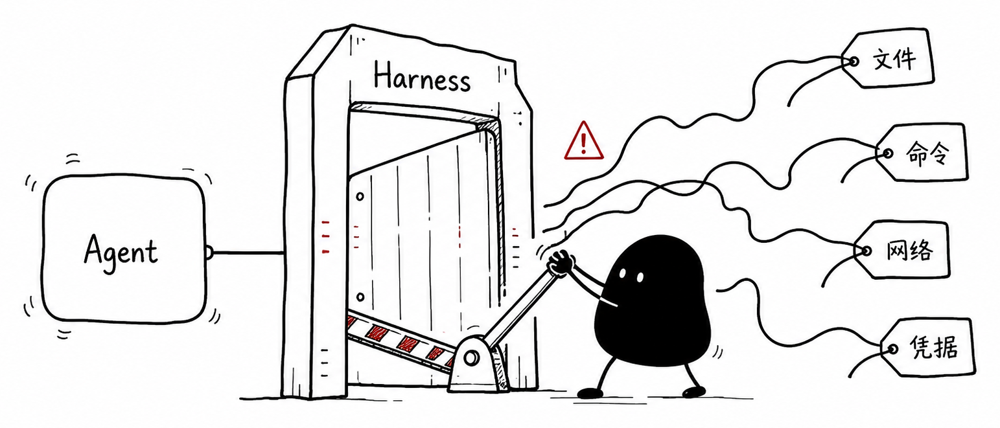
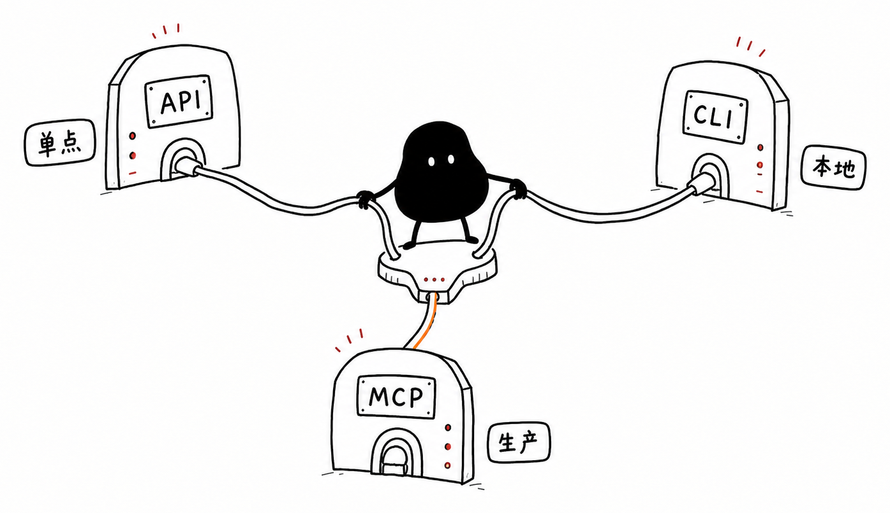
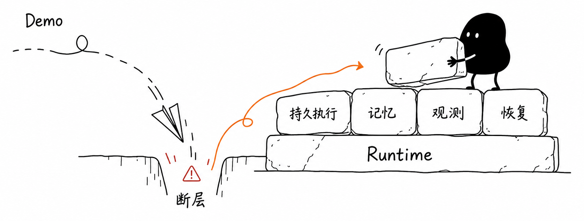
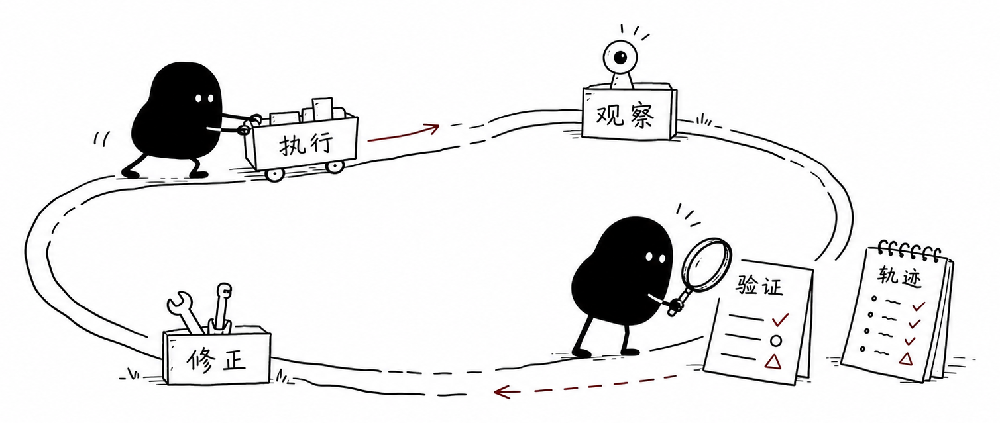
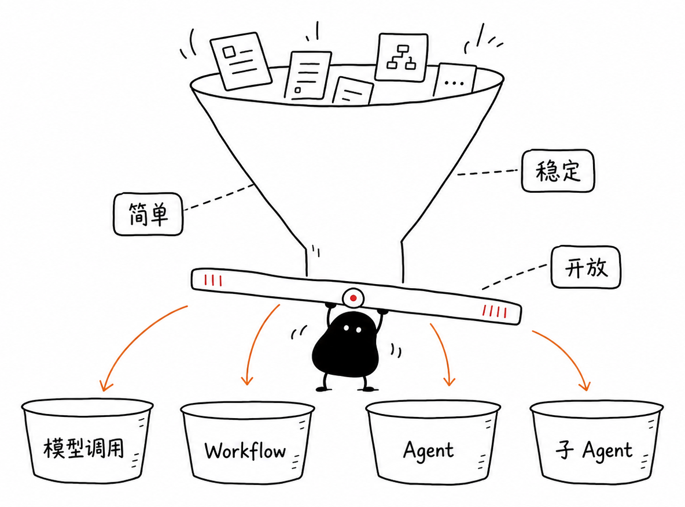

2026 上半年 / Agent 基础设施演进观察
Agent 基础设施
变厚
这组卡看一个核心变化：Agent 从 demo 走向生产时，模型外面的运行时系统正在变得更厚。

这里的运行时不是某个产品名，而是工具、权限、上下文、状态、审计、恢复、评估和人机介入组成的系统外壳。
01
FROM MODEL TO DEPLOYMENT
从模型
到部署
模型还是底座，但厂商的产品动作已经开始围绕岗位角色、任务状态、协作界面和部署证明展开。

FORWARD DEPLOYED ENGINEERING
部署
变成产品
FDE 重新变热，说明企业 AI 的瓶颈不只是有没有模型，而是模型怎么进入复杂组织的生产流程。

HARNESS AS BOUNDARY
Harness
是边界
Harness 不只是提示词和工具的外壳，而是把 Agent 能做什么、不能做什么写进系统里。

API · CLI · MCP
不是站队
是选路由
API、CLI、MCP 不该被当成信仰之争。真正要问的是：Agent 要接哪里，权限怎么管，结果要不要进上下文。

FROM WINDOW TO SCHEDULING
上下文
变调度
上下文能力不只是窗口变大，而是哪些信息常驻、按需加载、压缩，哪些留在工具和文件系统里。
NOT ONLY FRAMEWORK
需要 Runtime
不只是框架
Demo 跑一次就结束；生产里的 Agent 要长期运行、保存状态、等待审批，并在出错后能查清楚发生了什么。

LOOP ENGINEERING
重点不是循环
而是反馈
让模型多跑几轮并不难。真正难的是每一轮之后有没有验证、事件、轨迹和改进机制。

BEFORE MULTI-AGENT
先分任务
再上 Agent
Agent 变热，不等于所有任务都要 Agent 化。先判断任务是不是简单、路径是否稳定、步骤是否开放。

WHAT TO WATCH NEXT
下半年
看什么
最值得跟踪的不是谁又发了漂亮 demo，而是谁能把 Agent 放进组织和真实系统里稳定运行。
这些活儿不花哨，但决定了 Agent 能不能从 demo 走到生产。
10